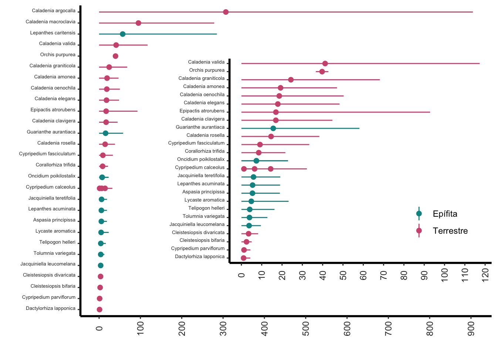

Librerías de R requeridas para el siguiente módulo
Code
library(Rcompadre) # Paquete para trabajar con la base de datos de COMPADRE y COMADRElibrary(tidyverse) # Paquete para activar multiples paqueteslibrary(gt) # Paquete para formatear tablaslibrary(kableExtra) # Paquete para formatear tablaslibrary(readxl)library(broom)library(ggdist)library(distributional)library(leaflet)library(Rage) # función para calcular el largo de vida esperada entre otraslibrary(car)library(popdemo)library(WRS2)
El siguiente capítulo presenta algunas de las funciones del paquete de Rage para trabajar con la base de datos de COMPADRE y COMADRE. Estas bases de datos son repositorios públicos que contienen información de dinámica poblacional de plantas (COMPADRE) y animales (COMADRE) en formato de matrices de transición de estados o edades de poblaciones (MPM). La libreria Rage tiene funciones calcular el largo de vida esperada, la edad a la primera reproducción, la entropía y la tasa de crecimiento poblacional entre otras. En este capítulo se presentan algunas de esas funciones y como usarlas para evaluar la dinámica poblacional de orquídeas.
Acceso a los datos de COMPADRE.
Vea el capítulo anterior
Rastreando los datos con el enlace de web
Usando la función cdb_fetch() se puede bajar los datos directamente de la pagina de web de COMPADRE. Esta función se encuentra en el paquete de Rcompadre.
Code
compadre <-cdb_fetch("compadre") # Usar este código para bajar los datos del repositorio de COMPADRE.
This is COMPADRE version 6.25.8.0 (release date Aug_14_2025)
See user agreement at https://compadre-db.org/Help/UserAgreement
See how to cite with `citation(Rcompadre)`
Renombrar la base datos a algo sencillo
En este script se renombrar la base de datos de COMPADRE a algo más sencillo TodasSp, reemplazando compadre.
Se visualiza el nombre de cada columna en la base de datos.
Hay 59 variables en la base de datos de COMPADRE.
Code
#TodasSp=as_cdb(compadre) # Un paso critico: Convertir la base de datos anterior COM(P)ADRE (de clase 'list') en la base en un objeto CompadreDB (COMPADRE Database)TodasSp=compadrenames(TodasSp) # La lista de los nombres de las variables en el archivo COMPADRE, Nota que 59 variables en la base de datos de COMPADRE.
Extraer (filter) solamente las especies de la familia Orchidaceae de la base completa de datos de COMPADRE.
Code
Orquideas = TodasSp %>%filter(Family %in%c("Orchidaceae")) # Extraer la orquídeas de la base de datos.head(Orquideas, n =3) # para visualizar las primera 3 filas de la base de datos de COMPADRE para las orquídeas.
A COM(P)ADRE database ('CompadreDB') object with 3 SPECIES and 3 MATRICES.
# A tibble: 3 × 59
mat MatrixID SpeciesAuthor SpeciesAccepted CommonName Kingdom Phylum
<list> <int> <chr> <chr> <chr> <chr> <chr>
1 <CompdrMt> 238285 Caladenia_amonea Caladenia amon… <NA> Plantae Trach…
2 <CompdrMt> 238286 Caladenia_argoc… Caladenia argo… <NA> Plantae Trach…
3 <CompdrMt> 238287 Caladenia_clavi… Caladenia clav… <NA> Plantae Trach…
# ℹ 52 more variables: Class <chr>, Order <chr>, Family <chr>, Genus <chr>,
# Species <chr>, Infraspecies <chr>, InfraspeciesType <chr>,
# OrganismType <chr>, DicotMonoc <chr>, AngioGymno <chr>, Authors <chr>,
# Journal <chr>, SourceType <chr>, OtherType <chr>, YearPublication <chr>,
# DOI_ISBN <chr>, AdditionalSource <chr>, StudyDuration <chr>,
# StudyStart <chr>, StudyEnd <chr>, ProjectionInterval <chr>,
# MatrixCriteriaSize <chr>, MatrixCriteriaOntogeny <chr>, …
Evaluar si un genero o especie este en la base de datos de COMPADRE
Para filtrar un genero específico se puede usar el siguiente código.
Aquí seleccionamos todas las matrices del genero Epipactis.
Nota que hay 59 filas, que corresponde típicamente a 59 matrices de diferentes poblaciones, tiempo o un análisis teóricos.
Code
Epi = Orquideas %>%filter(Genus %in%c("Epipactis")) # Filtrar la información de *Epipactis* en la base de datos.head(Epi) # Nota que en el genero *Epipactis*, tenemos 51 fila, pero todas son de la misma especie de dos estudios distintos.
Para detemrinar cuantos estudios únicos hay en la base de datos de orquídeas se puede usar las variables Authors y YearPublication. Estas dos variables combinadas dan un identificador único para cada estudio. En este caso hay 66 estudios únicos en la base de datos de COMPADRE.
Se observa en el nuevo data frame que hay 66 estudios únicos en la base de datos de COMPADRE, los autores de los estudios, el año de publicación y el DOI o ISBN del artículo, el año de comienzo y temrinación de los estudios, el tipo de organismo (epifita o terrestre), la cantidad de poblaciones muestreadas por especie y el nombre científico de la especie entre otras variables.
Code
#names(Orquideas) Los nombres de las variablesSPECIES_O = Orquideas %>%select( StudyStart, StudyEnd, SpeciesAccepted, YearPublication, Authors, DOI_ISBN, OrganismType, MatrixPopulation, mat ) %>%group_by( SpeciesAccepted, YearPublication, OrganismType, StudyStart, StudyEnd ) %>%summarize(n_populations =length(unique(MatrixPopulation))) %>%arrange(SpeciesAccepted) %>%mutate(StudyStart =as.numeric(StudyStart)) %>%mutate(StudyEnd =as.numeric(StudyEnd)) %>%mutate(OrganismType_RC=fct_recode(OrganismType,"Epífita"="Epiphyte","Terrestre"="Herbaceous perennial")) |>drop_na(StudyStart, StudyEnd)
Warning: There were 68 warnings in `mutate()`.
The first warning was:
ℹ In argument: `OrganismType_RC = fct_recode(OrganismType, Epífita =
"Epiphyte", Terrestre = "Herbaceous perennial")`.
ℹ In group 1: `SpeciesAccepted = "Aspasia principissa"`, `YearPublication =
"2006"`, `OrganismType = "Epiphyte"`, `StudyStart = 1997`.
Caused by warning:
! Unknown levels in `f`: Herbaceous perennial
ℹ Run `dplyr::last_dplyr_warnings()` to see the 67 remaining warnings.
Determinar cuantas poblaciones fueron muestreadas por especies
Cúal es la frecuencia de cantidad de poblaciones por especies en la base de datos. La mayoría de los estudios usaron una sola población, pero hay estudios que usaron hasta 18 poblaciones distintas. Estas poblaciones pudiese ser de diferentes publicaciones o de las mismas poblaciones pero de diferentes fuentes.
Code
as.data.frame(table(SPECIES_O$n_populations)) |>ggplot(aes(Var1, Freq))+geom_bar(stat="identity",aes(fill="lightblue"))+rlt_style_fill() +ylab("Frecuencia")+xlab("Cantidad de Poblaciones en el estudio")+theme(legend.position ="none")
La cantidad de poblaciones por especies en la base de datos de COMPADRE.
La cantidad de poblaciones por especies en la base de datos de COMPADRE varia grandemente. La mayoría de las especies tienen una sola población, pero hay especies que tienen hasta 20 poblaciones distintas. Estas poblaciones pudiese ser de diferentes publicaciones. Por ejemplo los datos de Lepanthes rupestris provienen de dos publicaciones distintas (Tremblay & Ackerman, 2001; Tremblay & McCarthy, 2014), hasta pudiese en parte ser matrices recolectado de la misma población en los años, pero con objetivos distintos. En la primera publicación (Tremblay & Ackerman, 2001) se uso para evaluar el tamaño efectivo de la poblaciones, Ne. En la segunda publicación (Tremblay & McCarthy, 2014) se utilizaron los datos de las mismas poblaciones anterior y periodo de tiempo con el enfoque de desarrollar un nuevo método de estimar los elementos de la matriz, especialmente cuando hay pocos datos en cada población o tiempo y se aprovecha del conocimiento de la información de todas las poblaciones para tener estimados de los parámetros para que sean biologícamente realista.
¿Cuan largo fueron los estudios?
Para evaluar el largo de tiempo por estudio se necesita seleccionar una combinación de variables única
Hay estudios que duraron pocos tiempos. El mínimo es de dos periodos de tiempo para calcular un periodo de transición. Hay otros estudios que muestrearon las poblaciones por mucho meas tiempo. Nota que también hay especies que fueron muestreados múltiples veces pero a cada mes (los trabajos de Tremblay con Lepanthes) y otros a cada año.
La duración de los estudios en la base de datos de COMPADRE. La mayoría de los estudios duraron pocos años.
Aquí vemos cuando comenzaron los estudios comenzaron y terminaron basado si las plantas son epifitas o no.
El la siguiente figura se visualiza el tiempo de duración de los estudios de las orquídeas epifitas y terrestre. En la base de datos de COMPADRE la mayoría de los estudios duraron pocos años especialmente en epifitas. Hay estudios que duraron más de 20 años.
En este caso se evalúa si las matrices cumplen con ciertas condiciones para poder calcular el valor propio de lambda. Estas condiciones (vea el capítulo de Rcompadre).
Primero aplicamos la función cdb_flag() a la base de datos de orquídeas para evaluar las matrices y crear una columna para cada evaluación. (vea lista en el capítulo anterior)
Code
#Orchids_New=as_cdb(index)#compadre$mat[index]Compadre_flagged <-cdb_flag(Orquideas) # Evaluación de todas las opciones en la base de datos de COMPADRECompadre_flagged %>%select(mat, SpeciesAccepted, starts_with("check"))
En los siguientes scripts se filtra para las matrices con ciertas condiciones para evaluar si las matrices son ergódicas e irreducibles. Notas las matrices que son ergódica son irreducibles, pero no todas las matrices irreducibles son ergódicas. Evalué la cantidad de filas en cada caso.
Code
Mat_ergodic <-subset( Compadre_flagged, check_NA_A ==FALSE& check_ergodic ==TRUE) # para evaluar si las matrices son ergódicas solamentehead(Mat_ergodic, n=2)
A COM(P)ADRE database ('CompadreDB') object with 2 SPECIES and 2 MATRICES.
# A tibble: 2 × 73
mat MatrixID SpeciesAuthor SpeciesAccepted CommonName Kingdom Phylum
<list> <int> <chr> <chr> <chr> <chr> <chr>
1 <CompdrMt> 238285 Caladenia_amonea Caladenia amon… <NA> Plantae Trach…
2 <CompdrMt> 238286 Caladenia_argoc… Caladenia argo… <NA> Plantae Trach…
# ℹ 66 more variables: Class <chr>, Order <chr>, Family <chr>, Genus <chr>,
# Species <chr>, Infraspecies <chr>, InfraspeciesType <chr>,
# OrganismType <chr>, DicotMonoc <chr>, AngioGymno <chr>, Authors <chr>,
# Journal <chr>, SourceType <chr>, OtherType <chr>, YearPublication <chr>,
# DOI_ISBN <chr>, AdditionalSource <chr>, StudyDuration <dbl>,
# StudyStart <chr>, StudyEnd <chr>, ProjectionInterval <chr>,
# MatrixCriteriaSize <chr>, MatrixCriteriaOntogeny <chr>, …
Code
Mat_irred <-subset( Compadre_flagged, check_NA_A ==FALSE& check_irreducible ==TRUE) # para evaluar si las matrices son irreducibles solamentehead(Mat_irred, n=2)
A COM(P)ADRE database ('CompadreDB') object with 2 SPECIES and 2 MATRICES.
# A tibble: 2 × 73
mat MatrixID SpeciesAuthor SpeciesAccepted CommonName Kingdom Phylum
<list> <int> <chr> <chr> <chr> <chr> <chr>
1 <CompdrMt> 238285 Caladenia_amonea Caladenia amon… <NA> Plantae Trach…
2 <CompdrMt> 238286 Caladenia_argoc… Caladenia argo… <NA> Plantae Trach…
# ℹ 66 more variables: Class <chr>, Order <chr>, Family <chr>, Genus <chr>,
# Species <chr>, Infraspecies <chr>, InfraspeciesType <chr>,
# OrganismType <chr>, DicotMonoc <chr>, AngioGymno <chr>, Authors <chr>,
# Journal <chr>, SourceType <chr>, OtherType <chr>, YearPublication <chr>,
# DOI_ISBN <chr>, AdditionalSource <chr>, StudyDuration <dbl>,
# StudyStart <chr>, StudyEnd <chr>, ProjectionInterval <chr>,
# MatrixCriteriaSize <chr>, MatrixCriteriaOntogeny <chr>, …
Code
Mat_erg_irred <-subset( Compadre_flagged, check_NA_A ==FALSE& check_irreducible ==TRUE& check_ergodic ==TRUE) # para evaluar si las matrices son ergódicas e irreducibles al mismo tiempohead(Mat_erg_irred, n=2)
A COM(P)ADRE database ('CompadreDB') object with 2 SPECIES and 2 MATRICES.
# A tibble: 2 × 73
mat MatrixID SpeciesAuthor SpeciesAccepted CommonName Kingdom Phylum
<list> <int> <chr> <chr> <chr> <chr> <chr>
1 <CompdrMt> 238285 Caladenia_amonea Caladenia amon… <NA> Plantae Trach…
2 <CompdrMt> 238286 Caladenia_argoc… Caladenia argo… <NA> Plantae Trach…
# ℹ 66 more variables: Class <chr>, Order <chr>, Family <chr>, Genus <chr>,
# Species <chr>, Infraspecies <chr>, InfraspeciesType <chr>,
# OrganismType <chr>, DicotMonoc <chr>, AngioGymno <chr>, Authors <chr>,
# Journal <chr>, SourceType <chr>, OtherType <chr>, YearPublication <chr>,
# DOI_ISBN <chr>, AdditionalSource <chr>, StudyDuration <dbl>,
# StudyStart <chr>, StudyEnd <chr>, ProjectionInterval <chr>,
# MatrixCriteriaSize <chr>, MatrixCriteriaOntogeny <chr>, …
Ahora usando las matrices que cumple con las condiciones de ergodicidad y irreducbilidad se puede calcular el valor propio de lambda.
La función eigs calcula los valores propios de una matriz, la función proviene de la library(popdemo). En este caso se calcula el valor propio de lambda para las matrices que son ergódicas e irreducibles previamente seleccionado. Usando la función sapply se aplica la función eigs a todas las matrices en la base de datos y crea una lista de los cálculos. Si mira la lista de valores propios de lambda en el objeto lambdaVals se observa valor por cada matA incluido en el archivo.
Se usa la función summary para resumir los valores propios de lambda.
Se usa la función hist para visualizar la distribución de los valores propios de lambda.
Code
lambdaVals <-sapply(matA(Mat_erg_irred), popdemo::eigs, what ="lambda") summary(lambdaVals) # la distribuciones de los lambdas
Min. 1st Qu. Median Mean 3rd Qu. Max.
0.3888 0.9370 0.9940 0.9835 1.0258 1.7760
Code
lambdaVals=as.tibble(lambdaVals)
Warning: `as.tibble()` was deprecated in tibble 2.0.0.
ℹ Please use `as_tibble()` instead.
ℹ The signature and semantics have changed, see `?as_tibble`.
`stat_bin()` using `bins = 30`. Pick better value `binwidth`.
Una segunda alternativa es usar la función map_dbl de la librería purrr para calcular cada uno los valores propios de lambda.
La función de map_dbl transforma su entrada aplicando una función a cada elemento de una lista y devolviendo un objeto de la misma longitud que la entrada. En este caso por cada matA, habrá un lambda.
Code
## con el paquete popdemolambdaVals1 <-map_dbl(matA(Mat_erg_irred),~ popdemo::eigs(.x, what ="lambda"))## O puede calcular lambda con el paquete popbio, que evita algunos mensajes de advertencialambdaVals2 <-map_dbl(matA(Mat_erg_irred), ~ popbio::lambda(.x))
Variación en crecimiento de la población en Epífitas y Terrestres
Aquí seleccionamos las especies de Epifitas y Terrestres en objeto distincto con todas las poblaciones muestradas
Compadre_flagged_epif <-cdb_flag(epifitas)x_epif <-subset( Compadre_flagged_epif, check_NA_A ==FALSE& check_ergodic ==TRUE)#sapply(matA(x_epi), popdemo::eigs, what="lambda")lambda_epif <-map_dbl(matA(x_epif), ~ popdemo::eigs(.x, what ="lambda"))#Or with popbio, which avoids some warning messages…Compadre_flagged_terrestres <-cdb_flag(terrestres)x_terr <-subset( Compadre_flagged_terrestres, check_NA_A ==FALSE& check_ergodic ==TRUE)lambda_terr <-map_dbl(matA(x_terr), ~ popdemo::eigs(.x, what ="lambda"))
Con la función summary evaluamos la tendencias centrales y dispersión de las especies terrestres y epifitas. Uno observa que las especies terrestres tienen valores propios de lambda más dispersos que las especies epifitas y los promedios son distintos un poco distintos y las mediana es similar.
Code
summary(lambda_epif)
Min. 1st Qu. Median Mean 3rd Qu. Max.
0.3888 0.9691 0.9951 0.9776 1.0047 1.3592
Code
summary(lambda_terr)
Min. 1st Qu. Median Mean 3rd Qu. Max.
0.4089 0.9296 0.9992 0.9989 1.0432 1.7760
Para visualizar los datos en una figura de ggplot2, hay que convertir estas filas en un data.frame y añadir una columna con el tipo de habitad, renombrar la columna lambda y unir los dos data.frames en uno solo.
Code
df_Lamb_epif =as.data.frame(lambda_epif)df_Lamb_epi = df_Lamb_epif %>%add_column(Habit_Type ="Epífitas") %>%rename(lambda = lambda_epif)df_Lamb_terr =as.data.frame(lambda_terr)df_Lamb_terr = df_Lamb_terr %>%add_column(Habit_Type ="Terrestre") %>%rename(lambda = lambda_terr)ALL_Lambdas =rbind(df_Lamb_epi, df_Lamb_terr) # unir los dos data frame en uno
`stat_bin()` using `bins = 30`. Pick better value `binwidth`.
Code
# ggsave("Figures/Terr_Epi_lambda.png")
Calcular los coeficientes y determinar si son significativamente diferentes entre los grupos
Para calcular los coeficientes (el promedio) y determinar si estos son significativamente diferentes entre los grupos se puede usar un modelo lineal y la función lm. En este caso se usa la variable Habit_Type para predecir el valor propio de lambda. Se observa que las especies epifitas tienden a tener un valor propio de lambda más bajo que las especies terrestres.
En adición se pude ver los coeficientes específicos de cada grupo usando la misma función añadiendo -1 al modelo que quita el intercepto y calcula los coeficientes para cada grupo.
Code
model_lambda =lm(lambda ~ Habit_Type, data = ALL_Lambdas)summary(model_lambda)
Call:
lm(formula = lambda ~ Habit_Type, data = ALL_Lambdas)
Residuals:
Min 1Q Median 3Q Max
-0.58998 -0.04155 0.00987 0.03269 0.77717
Coefficients:
Estimate Std. Error t value Pr(>|t|)
(Intercept) 0.977613 0.007781 125.633 <2e-16 ***
Habit_TypeTerrestre 0.021252 0.010730 1.981 0.0481 *
---
Signif. codes: 0 '***' 0.001 '**' 0.01 '*' 0.05 '.' 0.1 ' ' 1
Residual standard error: 0.133 on 614 degrees of freedom
Multiple R-squared: 0.006349, Adjusted R-squared: 0.004731
F-statistic: 3.923 on 1 and 614 DF, p-value: 0.04807
model_lambda_epi_terr =lm(lambda ~ Habit_Type-1, data = ALL_Lambdas)summary(model_lambda_epi_terr)
Call:
lm(formula = lambda ~ Habit_Type - 1, data = ALL_Lambdas)
Residuals:
Min 1Q Median 3Q Max
-0.58998 -0.04155 0.00987 0.03269 0.77717
Coefficients:
Estimate Std. Error t value Pr(>|t|)
Habit_TypeEpífitas 0.977613 0.007781 125.6 <2e-16 ***
Habit_TypeTerrestre 0.998865 0.007387 135.2 <2e-16 ***
---
Signif. codes: 0 '***' 0.001 '**' 0.01 '*' 0.05 '.' 0.1 ' ' 1
Residual standard error: 0.133 on 614 degrees of freedom
Multiple R-squared: 0.9823, Adjusted R-squared: 0.9822
F-statistic: 1.703e+04 on 2 and 614 DF, p-value: < 2.2e-16
Visualización de las distribuciones de los coeficientes
Uno puedo visualizar estas distribuciones usando la librería ggdist y distributional, con la función stat_halfeye. Es importante notar que la función stat_halfeye requiere que se especifique la distribución de los datos y que la información proviene del modelo anterior (model_lambda). En este análisis se asume que los \(\lambda\) tienen una distribución normal.
La gráfica anterior puede esconder la dispersión de los datos, específicamente los datos sesgados, por lo que se puede añadir los datos originales a la figura. En el siguiente caso se añade un | por cada lambda en la posición inferior de la figura. Nota ahora que la dispersión de los datos es varia si uno mira la distribución con el promedio y el error estandard versus los datos originales, los |. Es claro que con esta figura uno puede apreciar la dispersión de los datos y la distribución de los datos. Esta gráfica da una perspectiva muy diferente al anterior y más completa de los datos, enfocado en los datos fuera de datos centrado de la distribución.
La lista presente corresponde a los datos de COMPADRE y suplementada con búsqueda en los artículos para crear un mapa donde fueron hecho los estudios de dinámica poblacional. Desafortunadamente todavía en COMPADRE falta muchos datos y detalles que entrar en la base de datos. En esta sección se hizo una búsqueda de las orquídeas en la base de datos de COMPADRE y se extrajeron los datos de latitud y longitud de los artículos originales. En algunos casos no se pudo encontrar los datos de latitud y longitud, pero si el país o región donde se hizo el estudio. En estos casos se usó Google Maps para obtener las coordenadas aproximadas del sitio de muestreo. En otros casos no se pudo encontrar ninguna información de la localización del estudio. Estos casos no están incluidos en el mapa. Agradezco a Diana Molina Ozuma para la búsqueda de las coordinadas del los sitios de estudio.
Lista de números de poblaciones únicas por especies.
Lat_Long = Orchid_data_DOI_Diana_3a %>%select(SpeciesAccepted, Lon, Lat, OrganismType) |>distinct(SpeciesAccepted, Lon, Lat, OrganismType)#write_csv(Lat_Long, "data/Orchid_data_DOI_Diana_3a.csv")
Visualización de distribución con ggplot2
Usamos el paquete ggplot2 para visualizar la distribución de las orquídeas en la base de datos de COMPADRE. En este caso se usa la función borders para añadir los bordes de los países al mapa. La función borders usa funciones en el paquete maps para añadir los bordes de los países al mapa.
Code
ggplot2::ggplot(Lat_Long, aes(Lon, Lat, colour = OrganismType)) +borders(database ="world", fill ="grey80", col =NA) +geom_point(size =1.0, alpha =0.5)+theme(legend.position =c(0.15,0.2))+rlt_style_colour()
Warning: `borders()` was deprecated in ggplot2 4.0.0.
ℹ Please use `annotation_borders()` instead.
Code
#ggsave("orchid_map.jpg")
Usando Leaflet para mapar de distribución interactivo
Aquí se usa el paquete Leaflet para mapear los sitios de muestreo de las especies donde hubo trabajo de campo.
Se observa una gran disparidad en los sitios de muestreo entre las orquídeas. Las poblaciones en roja son epifitas y las azul son terrestres. Note la disparidad, las especies terrestres están mayormente en Europa y Norte América, con poca representación en Asia y ninguna en África. La especies epifitas están todas en el Caribe y Centro América (México) y ninguna en África, Asia y Australia. Note que este mapa se puede agrandar para enfocar en areas especificas del mapa.
Code
PointUsePalette <- leaflet::colorFactor(palette =c("#009392", "#CF597E"),domain =c("Epiphyte", "Herbaceous perennial")) # para asignar los colores a los factores (clase de Vida)Orchid_map =leaflet(Lat_Long) %>%# los datosaddTiles() %>%addCircleMarkers(lng =~Lon, # la longitudlat =~Lat, # la latitudradius =2, # el tamaño del puntocolor =~PointUsePalette(OrganismType), # Para colorear los puntos por el tipo clase de vidapopup =~paste0("<I>", SpeciesAccepted, "</I>") # para poner los nombres científicos en itálicos )Orchid_map
Code
# htmltools::save_html(Orchid_map, file = "Orchid_map.html") # El script para crear un archivo aparte del mapa
La esperanza de vida de las orquídeas
Cada especies tiene un promedio de largo de vida y una distribución de supervivencia. En los humanos el largo de vida promedio es de ±72 años (y varia por país y otros factores), pero hay personas que viven hasta 100 años o más. En las orquídeas el largo de vida promedio varia mucho de especies cada tienen un periodo vida corto, pero hay individuos que viven hasta 100 años o más. Para calcular el largo de vida y su distribuciones de una especies se usa la matriz de transición matU (la matrix de transiciones) y la etapa de inicio de la vida start_life. La función lifeExpectancy calcula el largo de vida de una especies. Nota que este caso no se usa la matriz de fecundidad matF o la matriz de clonaje matC.
Para calcular y comparar los datos es importante que la matriz sea del mismo largo de tiempo, por ejemplo no se debería comparar una matriz de 1 año con una matriz de 1 mes o de 10 años. Los valores de tiempo es la unidad de los datos de la matriz.
Aquí el script crea un data frame de todas las especies que cumple con las condiciones necesarias para ser evaluados. Despues de la aplicaciones de los filtros se retiene 34 especies de orquídeas.
Code
index_O_filtrado <- Orquideas %>%filter(ProjectionInterval ==1.0) |># filtrar para matriz de un año solamentefilter( MatrixComposite =="Mean", # filtrar para la matriz promedia MatrixTreatment =="Unmanipulated", # filtrar para la matriz sin manipulación (que no son experimentos) MatrixCaptivity =="W"# filtrar para poblaciones naturales (no en cautiverio) ) %>%mutate(StageID =cdb_id_stages(.)) %>%# crear un ID para las etapascdb_collapse(columns ="StageID") %>%# colapsar las etapascdb_flag() %>%# evaluar las matrices y crear una columna para cada evaluaciónfilter( check_NA_U ==FALSE, # filtrar para matrices sin valores faltantes check_zero_U ==FALSE, # filtrar para matrices sin valores cero check_singular_U ==FALSE, # filtrar para matrices no singulares check_surv_gte_1 ==FALSE# <- Asegurarse de que este filtro se aplique ) %>%mutate(matU =matU(.), start_life =mpm_first_active(.))index_O_filtrado |>select(mat, OrganismType) |>group_by(OrganismType) |>summarize(n=n())
# A tibble: 2 × 2
OrganismType n
<chr> <int>
1 Epiphyte 11
2 Herbaceous perennial 23
Paso adicional de filtrado manual para mayor seguridad.
El filtro adicional es para remover matrices que tienen valores de supervivencia mayores a 1 en la matriz de transición matU. Esto se puede hacer con la función sapply para evaluar cada matriz en la lista de matrices y remover las que no cumplen con esta condición. En este caso se retienen 31 matrices que cumplen con esta condición. En otra palabra tenemos 3 matrices de la lista enterior que tiene supervivencia mayor a uno (lo que es biologícamente imposible).
Ahora aplicar las funciones de cálculo para estimar el largo de vida y su varianza. Creamos una función llamada lifeExpectancy que calcula el largo de vida usando la matriz de transición matU y la etapa de inicio de la vida start_life.
Code
lifeExpectancy <-function(matU, startLife) { N <-solve(diag(nrow(matU)) - matU)return(colSums(N)[startLife])}index_O_calculado <- index_O_filtrado_final %>%mutate(life_expectancy =mapply(lifeExpectancy, matU, start_life)) %>%# calcular el largo de vida promediomutate(var_life_expectancy =mapply(life_expect_var, matU, start =1)) %>%# calcular la varianza del largo de vidamutate(low_CI_var_LS =pmax(0, life_expectancy -1.96*sqrt(var_life_expectancy))) %>%# calcular el intervalo de confianza inferiormutate(high_CI_var_LS = life_expectancy +1.96*sqrt(var_life_expectancy)) %>%# calcular el intervalo de confianza superiormutate(OrganismType =reorder(OrganismType, life_expectancy, median)) # ordenar las especies por el largo de vida
The following object is masked from 'package:gt':
as_gtable
The following object is masked from 'package:lubridate':
stamp
Code
final_plot <-ggdraw() +draw_plot(main.plot) +draw_plot(inset.plot, x =0.3, y =0.15, width =0.7, height =0.7)final_plot

Longevidad
La longevidad es el largo de vida máximo que puede alcanzar un individuo en una población. En este caso se usa la función longevity para calcular el tiempo para un cohorte llegue a un 5% de supervivencia. La función longevity requiere la matriz de transición matU y la etapa de inicio de la vida start_life.
Figura del largo de vida promedio y su varianza para las orquídeas terrestres y epifitas.
Code
lifeExpectancy <-function(matU, startLife) { N <-solve(diag(nrow(matU)) - matU)return(colSums(N)[startLife])}compadre_life_expect <- Orquideas %>%filter(ProjectionInterval ==1.0) |># filtrar para matriz de un año solamentefilter( MatrixComposite =="Mean", # filtrar para la matriz promedia MatrixTreatment =="Unmanipulated", # filtrar para la matriz sin manipulación MatrixCaptivity =="W"# filtrar para poblaciones naturales (no en cautiverio) ) %>%mutate(StageID =cdb_id_stages(.)) %>%# crear un ID para las etapascdb_collapse(columns ="StageID") %>%# colapsar las etapascdb_flag() %>%# evaluar las matrices y crear una columna para cada evaluaciónfilter( check_NA_U ==FALSE, # filtrar para matrices sin valores faltantes check_zero_U ==FALSE, # filtrar para matrices sin valores cero check_singular_U ==FALSE, check_surv_gte_1 ==FALSE, # filtrar para matrices sin valores de supervivencia mayores a 1 ) %>%# filtrar para matrices no singularesmutate(matU =matU(.), start_life =mpm_first_active(.)) %>%# extraer la matriz de transición y la etapa de inicio de la vidamutate(life_expectancy =mapply(lifeExpectancy, matU, start_life)) %>%# calcular el largo de vidamutate(var_life_expectancy =mapply(life_expect_var, matU, start =1)) %>%# calcular la varianza del largo de vidamutate(low_CI_var_LS = life_expectancy -1.96*sqrt(var_life_expectancy)) %>%# calcular el intervalo de confianza inferiormutate(high_CI_var_LS = life_expectancy +1.96*sqrt(var_life_expectancy)) %>%# calcular el intervalo de confianza superiormutate(OrganismType =reorder(OrganismType, life_expectancy, median)) # ordenar las especies por el largo de vida
Visualizar el largo de vida por plantas epifitas versus terrestres. Nota aquí que algunas especies están representada múltiple veces. Por consecuencia la distribución de los datos no es una buena representación de la diferencia entre las especies epifitas y terrestres, debido a lo que se llama pseudoreplicación. Este tabla representa la distribución los datos del data frame anterior.
Calculando el promedio y la desviación estándar de la esperanza de vida de las orquídeas.
En el siguiente script y gráfico vemos la visualización por genero de los estimados de la esperanza de vida. Nota que la esperanza de vida es un estimado y no un valor exacto. En este caso se usa la función life_expect_var para calcular la varianza de la esperanza de vida. La escala de x (el largo de vida fue cambiado a log10 de la esperanza de vida).
How to calculate CI of life span, it is in the table above, use gamma, not normal !!!!
low_CI_var_LS high_CI_var_LS
Code
#SPECIES_O$SpeciesAccepted <- fct_reorder(SPECIES_O$SpeciesAccepted, SPECIES_O$StudyStart, .desc = FALSE) # Ordenar por fecha de inicio del estudioggplot( index_O_calculado,aes(x =reorder(SpeciesAccepted, life_expectancy), life_expectancy,colour = OrganismType )) +# geom_boxplot() +geom_point() +scale_y_log10() +coord_flip() +labs(x =NULL, y ="Life expectancy (log(years))")# rlt_theme+#theme(legend.position = "none")#ggsave("Figures/Genus_Life_Span.png")
EWl largo de vida de las Caladenia solamente
Evaluando el largo de vida de las especies de Caladenia solamente
Baudisch, A. 2011. The pace and shape of ageing. Methods in Ecology and Evolution, 2(4), 375– 382. doi:10.1111/j.2041-210X.2010.00087.x
Baudisch, A, Stott, I. 2019. A pace and shape perspective on fertility. Methods Ecol Evol. 10: 1941– 1951. doi:10.1111/2041-210X.13289
Caswell, H. 2001. Matrix Population Models: Construction, Analysis, and Interpretation. 2nd edition. Sinauer Associates, Sunderland, MA. ISBN-10: 0878930965
Demetrius, L. 1978. Adaptive value, entropy and survivorship curves. Nature 275: 213-214.
Demetrius, L., & Gundlach, V. M. 2014. Directionality theory and the entropic principle of natural selection. Entropy 16: 5428-5522.
de Vries, C., Bernard, C., & Salguero-Gómez, R. 2023. Discretising Keyfitz’ entropy for studies of actuarial senescence and comparative demography. Methods in Ecology and Evolution, 14, 1312–1319. doi:10.1111/2041-210X.14083
Morris, W. F. & Doak, D. F. 2003. Quantitative Conservation Biology: Theory and Practice of Population Viability Analysis. Sinauer Associates, Sunderland, MA. ISBN-10: 0878935460
Salguero-Gómez, R., Jones, O. R., Jongejans, E., Blomberg, S. P., Hodgson, D. J., Mbeau-Ache, C., Zuidema, P. A., de Kroon, H., & Buckley, Y. M. 2016. Fast–Slow continuum and reproductive strategies structure plant life-history variation worldwide. Proceedings of the National Academy of Sciences 113 (1): 230–35
Use robust Approach
Para el siguiente análisis se necesita instalar el paquete WRS2.
Y se necesita cargar el archivo de funciones de Rallfun-v38.txt que se encuentra en el siguiente enlace <https://github.com/rrwilcox/Rallfun> y guardarlo en su directorio de trabajo. Pudiese ser que haya versiones más recientes de este archivo. Nota que la dirección abajo funciona para mi computadora, uds tienen que ajustar la dirección del archivo a su directorio de trabajo.
Calcular el promedio y la varianza en la expectativa de vida de un modelo de matriz poblacional
Tremblay R, Ackerman J. 2001. Gene flow and effective population size in Lepanthes (Orchidaceae): A case for genetic drift. Biological Journal of the Linnean Society 72:47–62. DOI: 10.1006/bijl.2000.0485.
Tremblay R, McCarthy MA. 2014. Bayesian estimates of transition probabilities in seven small lithophytic orchid populations: Maximizing data availability from many small samples. PLoS One 9:e102859.
Source Code
# Rage y Orquídeas {#Rage}Por: Raymond L. Tremblay y#### Librerías de R requeridas para el siguiente módulo```{r Rage1, message=FALSE}library(Rcompadre) # Paquete para trabajar con la base de datos de COMPADRE y COMADRElibrary(tidyverse) # Paquete para activar multiples paqueteslibrary(gt) # Paquete para formatear tablaslibrary(kableExtra) # Paquete para formatear tablaslibrary(readxl)library(broom)library(ggdist)library(distributional)library(leaflet)library(Rage) # función para calcular el largo de vida esperada entre otraslibrary(car)library(popdemo)library(WRS2)```El siguiente capítulo presenta algunas de las funciones del paquete de *Rage* para trabajar con la base de datos de COMPADRE y COMADRE. Estas bases de datos son repositorios públicos que contienen información de dinámica poblacional de plantas (COMPADRE) y animales (COMADRE) en formato de matrices de transición de estados o edades de poblaciones (MPM). La libreria *Rage* tiene funciones calcular el largo de vida esperada, la edad a la primera reproducción, la entropía y la tasa de crecimiento poblacional entre otras. En este capítulo se presentan algunas de esas funciones y como usarlas para evaluar la dinámica poblacional de orquídeas.```{r Rage2, echo=FALSE}rlt_theme <-theme(axis.title.y =element_text(colour ="grey20", size =10, face ="bold"),axis.text.x =element_text(colour ="grey20", size =10, face ="bold"),axis.text.y =element_text(colour ="grey20", size =15, face ="bold"),axis.title.x =element_text(colour ="grey20", size =15, face ="bold")) +theme(# Remover los borderpanel.border =element_blank(),# Remover las lineaspanel.grid.major =element_blank(),panel.grid.minor =element_blank(),# Remove el fondo del panelpanel.background =element_blank(),# añadir lineas más gruesasaxis.line.x =element_line(colour ="black", linewidth =1),axis.line.y =element_line(colour ="black", linewidth =1) )diverging=c("#009392","#CF597E","#E9E29C", "#39B185","#EEB479" , "#9CCB86" )# --- 2. Combine them into a list object ---# This list can be added to the plot with a single '+'rlt_style_fill <-function() {list( rlt_theme,scale_fill_manual(values = diverging) )}rlt_style_colour <-function() {list( rlt_theme,scale_colour_manual(values = diverging) )}```------------------------------------------------------------------------### Acceso a los datos de COMPADRE.Vea el capítulo anterior------------------------------------------------------------------------#### Rastreando los datos con el enlace de web- Usando la función *cdb_fetch()* se puede bajar los datos directamente de la pagina de web de COMPADRE. Esta función se encuentra en el paquete de **Rcompadre**.```{r Rage4}compadre <-cdb_fetch("compadre") # Usar este código para bajar los datos del repositorio de COMPADRE.```#### Renombrar la base datos a algo sencillo- En este script se renombrar la base de datos de COMPADRE a algo más sencillo **TodasSp**, reemplazando **compadre**.- Se visualiza el nombre de cada columna en la base de datos. - Hay 59 variables en la base de datos de COMPADRE.```{r Rage5}#TodasSp=as_cdb(compadre) # Un paso critico: Convertir la base de datos anterior COM(P)ADRE (de clase 'list') en la base en un objeto CompadreDB (COMPADRE Database)TodasSp=compadrenames(TodasSp) # La lista de los nombres de las variables en el archivo COMPADRE, Nota que 59 variables en la base de datos de COMPADRE.```------------------------------------------------------------------------### Filtrar para la familia de Orquidaceae- Extraer (filter) solamente las especies de la familia **Orchidaceae** de la base completa de datos de COMPADRE.```{r Rage7}Orquideas = TodasSp %>%filter(Family %in%c("Orchidaceae")) # Extraer la orquídeas de la base de datos.head(Orquideas, n =3) # para visualizar las primera 3 filas de la base de datos de COMPADRE para las orquídeas.```------------------------------------------------------------------------#### Evaluar si un genero o especie este en la base de datos de COMPADRE- Para filtrar un genero específico se puede usar el siguiente código. - Aquí seleccionamos todas las matrices del genero **Epipactis**. - Nota que hay 59 filas, que corresponde típicamente a 59 matrices de diferentes poblaciones, tiempo o un análisis teóricos.```{r Rage6}Epi = Orquideas %>%filter(Genus %in%c("Epipactis")) # Filtrar la información de *Epipactis* en la base de datos.head(Epi) # Nota que en el genero *Epipactis*, tenemos 51 fila, pero todas son de la misma especie de dos estudios distintos.cdb_flag(Epi) ```------------------------------------------------------------------------## Cuantos estudios únicos?Para detemrinar cuantos estudios únicos hay en la base de datos de orquídeas se puede usar las variables **Authors** y **YearPublication**. Estas dos variables combinadas dan un identificador único para cada estudio. En este caso hay 66 estudios únicos en la base de datos de COMPADRE.Se observa en el nuevo data frame que hay 66 estudios únicos en la base de datos de COMPADRE, los autores de los estudios, el año de publicación y el DOI o ISBN del artículo, el año de comienzo y temrinación de los estudios, el tipo de organismo (epifita o terrestre), la cantidad de poblaciones muestreadas por especie y el nombre científico de la especie entre otras variables.```{r chap7}#names(Orquideas) Los nombres de las variablesSPECIES_O = Orquideas %>%select( StudyStart, StudyEnd, SpeciesAccepted, YearPublication, Authors, DOI_ISBN, OrganismType, MatrixPopulation, mat ) %>%group_by( SpeciesAccepted, YearPublication, OrganismType, StudyStart, StudyEnd ) %>%summarize(n_populations =length(unique(MatrixPopulation))) %>%arrange(SpeciesAccepted) %>%mutate(StudyStart =as.numeric(StudyStart)) %>%mutate(StudyEnd =as.numeric(StudyEnd)) %>%mutate(OrganismType_RC=fct_recode(OrganismType,"Epífita"="Epiphyte","Terrestre"="Herbaceous perennial")) |>drop_na(StudyStart, StudyEnd) SPECIES_O#write_csv(SPECIES_O, "DATA/Species_O.csv")```------------------------------------------------------------------------### Determinar cuantas poblaciones fueron muestreadas por especies- Cúal es la frecuencia de cantidad de poblaciones por especies en la base de datos. La mayoría de los estudios usaron una sola población, pero hay estudios que usaron hasta 18 poblaciones distintas. Estas poblaciones pudiese ser de diferentes publicaciones o de las mismas poblaciones pero de diferentes fuentes.```{r Rage8}as.data.frame(table(SPECIES_O$n_populations)) |>ggplot(aes(Var1, Freq))+geom_bar(stat="identity",aes(fill="lightblue"))+rlt_style_fill() +ylab("Frecuencia")+xlab("Cantidad de Poblaciones en el estudio")+theme(legend.position ="none")```### La cantidad de poblaciones por especies en la base de datos de COMPADRE.- La cantidad de poblaciones por especies en la base de datos de COMPADRE varia grandemente. La mayoría de las especies tienen una sola población, pero hay especies que tienen hasta 20 poblaciones distintas. Estas poblaciones pudiese ser de diferentes publicaciones. Por ejemplo los datos de *Lepanthes rupestris* provienen de dos publicaciones distintas [@tremblay2001gene; @tremblay2014bayesian], hasta pudiese en parte ser matrices recolectado de la misma población en los años, pero con objetivos distintos. En la primera publicación [@tremblay2001gene] se uso para evaluar el tamaño efectivo de la poblaciones, **Ne**. En la segunda publicación [@tremblay2014bayesian] se utilizaron los datos de las mismas poblaciones anterior y periodo de tiempo con el enfoque de desarrollar un nuevo método de estimar los elementos de la matriz, especialmente cuando hay pocos datos en cada población o tiempo y se aprovecha del conocimiento de la información de todas las poblaciones para tener estimados de los parámetros para que sean biologícamente realista.------------------------------------------------------------------------### ¿Cuan largo fueron los estudios?Para evaluar el largo de tiempo por estudio se necesita seleccionar una combinación de variables únicaHay estudios que duraron pocos tiempos. El mínimo es de dos periodos de tiempo para calcular un periodo de transición. Hay otros estudios que muestrearon las poblaciones por mucho meas tiempo. Nota que también hay especies que fueron muestreados múltiples veces pero a cada mes (los trabajos de Tremblay con *Lepanthes*) y otros a cada año.- La duración de los estudios en la base de datos de COMPADRE. La mayoría de los estudios duraron pocos años.- Aquí vemos cuando comenzaron los estudios comenzaron y terminaron basado si las plantas son epifitas o no.```{r Rage9}SPECIES_O$SpeciesAccepted <-fct_reorder( SPECIES_O$SpeciesAccepted, SPECIES_O$StudyStart,.desc =FALSE)names(SPECIES_O)ggplot(SPECIES_O, aes(SpeciesAccepted, ymin = StudyStart, ymax = StudyEnd, color = OrganismType_RC)) +geom_linerange() +coord_flip() +theme(legend.position.inside =c(0.2, 0.8)) +ylab("") +xlab("") +rlt_style_colour() +theme(axis.text.x =element_text(color ="grey20",size =9,angle =90,hjust = .5,vjust = .5,face ="plain" ),axis.text.y =element_text(color ="grey20",size =7,angle =0,hjust =1,vjust =0,face ="plain" ),axis.title.x =element_text(color ="grey20",size =12,angle =0,hjust = .5,vjust =0,face ="plain" ),axis.title.y =element_text(color ="grey20",size =12,angle =90,hjust = .5,vjust = .5,face ="plain" ) )+theme(legend.position =c(0.2,0.8),legend.title =element_blank())+theme(axis.text.y =element_text(size =5))+scale_y_continuous(n.breaks =12)#ggsave("Figures/Lenght_survey.png")```------------------------------------------------------------------------### Tiempo de duración de las investigaciones.- El la siguiente figura se visualiza el tiempo de duración de los estudios de las orquídeas epifitas y terrestre. En la base de datos de COMPADRE la mayoría de los estudios duraron pocos años especialmente en epifitas. Hay estudios que duraron más de 20 años.```{r Rage10, message=FALSE, warning=FALSE}Orquideas = Orquideas %>%mutate(StudyDuration =as.numeric(StudyDuration))#table(Orquideas$StudyDuration)#table(Orquideas$OrganismType)ggplot(Orquideas, aes(StudyDuration, fill = OrganismType)) +geom_histogram(colour ="white") +facet_wrap(~OrganismType) +theme(legend.position ="none") +xlab("Study duration") +ylab("Frequency") +rlt_style_fill() +scale_x_continuous(n.breaks =10)#ggsave("Duración_Epi_Ter.pdf")ggsave("Figures/Duración_Epi_Ter.png")```------------------------------------------------------------------------Limpieza de la matriz con condiciones específicasEn este caso se evalúa si las matrices cumplen con ciertas condiciones para poder calcular el valor propio de lambda. Estas condiciones (vea el capítulo de **Rcompadre**).- Primero aplicamos la función **cdb_flag()** a la base de datos de orquídeas para evaluar las matrices y crear una columna para cada evaluación. (vea lista en el capítulo anterior)```{r Rage11}#Orchids_New=as_cdb(index)#compadre$mat[index]Compadre_flagged <-cdb_flag(Orquideas) # Evaluación de todas las opciones en la base de datos de COMPADRECompadre_flagged %>%select(mat, SpeciesAccepted, starts_with("check"))```#### Ergodicidad e IrreducibilidadEn los siguientes scripts se filtra para las matrices con ciertas condiciones para evaluar si las matrices son ergódicas e irreducibles. Notas las matrices que son ergódica son irreducibles, pero no todas las matrices irreducibles son ergódicas. Evalué la cantidad de filas en cada caso.```{r Rage12}Mat_ergodic <-subset( Compadre_flagged, check_NA_A ==FALSE& check_ergodic ==TRUE) # para evaluar si las matrices son ergódicas solamentehead(Mat_ergodic, n=2)Mat_irred <-subset( Compadre_flagged, check_NA_A ==FALSE& check_irreducible ==TRUE) # para evaluar si las matrices son irreducibles solamentehead(Mat_irred, n=2)Mat_erg_irred <-subset( Compadre_flagged, check_NA_A ==FALSE& check_irreducible ==TRUE& check_ergodic ==TRUE) # para evaluar si las matrices son ergódicas e irreducibles al mismo tiempohead(Mat_erg_irred, n=2)```### Ahora usando las matrices que cumple con las condiciones de ergodicidad y irreducbilidad se puede calcular el valor propio de lambda.- La función **eigs** calcula los valores propios de una matriz, la función proviene de la library(popdemo). En este caso se calcula el valor propio de lambda para las matrices que son ergódicas e irreducibles previamente seleccionado. Usando la función **sapply** se aplica la función **eigs** a todas las matrices en la base de datos y crea una lista de los cálculos. Si mira la lista de valores propios de lambda en el objeto **lambdaVals** se observa valor por cada **matA** incluido en el archivo.- Se usa la función **summary** para resumir los valores propios de lambda.- Se usa la función **hist** para visualizar la distribución de los valores propios de lambda.```{r Rage13}lambdaVals <-sapply(matA(Mat_erg_irred), popdemo::eigs, what ="lambda") summary(lambdaVals) # la distribuciones de los lambdaslambdaVals=as.tibble(lambdaVals)ggplot(lambdaVals, aes(value))+geom_histogram(aes(fill="lightblue"), colour="white")+rlt_style_fill()+xlab("Lambda values")+ylab("Frequency")+scale_x_continuous(n.breaks =10)```Una segunda alternativa es usar la función **map_dbl** de la librería **purrr** para calcular cada uno los valores propios de lambda.- La función de **map_dbl** transforma su entrada aplicando una función a cada elemento de una lista y devolviendo un objeto de la misma longitud que la entrada. En este caso por cada **matA**, habrá un lambda.```{r Rage23}## con el paquete popdemolambdaVals1 <-map_dbl(matA(Mat_erg_irred),~ popdemo::eigs(.x, what ="lambda"))## O puede calcular lambda con el paquete popbio, que evita algunos mensajes de advertencialambdaVals2 <-map_dbl(matA(Mat_erg_irred), ~ popbio::lambda(.x))```## Variación en crecimiento de la población en Epífitas y TerrestresAquí seleccionamos las especies de Epifitas y Terrestres en objeto distincto con todas las poblaciones muestradas```{r, Rage25}epifitas = Orquideas %>%filter(OrganismType =="Epiphyte")terrestres = Orquideas %>%filter(OrganismType =="Herbaceous perennial")``````{r Rage26}Compadre_flagged_epif <-cdb_flag(epifitas)x_epif <-subset( Compadre_flagged_epif, check_NA_A ==FALSE& check_ergodic ==TRUE)#sapply(matA(x_epi), popdemo::eigs, what="lambda")lambda_epif <-map_dbl(matA(x_epif), ~ popdemo::eigs(.x, what ="lambda"))#Or with popbio, which avoids some warning messages…Compadre_flagged_terrestres <-cdb_flag(terrestres)x_terr <-subset( Compadre_flagged_terrestres, check_NA_A ==FALSE& check_ergodic ==TRUE)lambda_terr <-map_dbl(matA(x_terr), ~ popdemo::eigs(.x, what ="lambda"))```Con la función summary evaluamos la tendencias centrales y dispersión de las especies terrestres y epifitas. Uno observa que las especies terrestres tienen valores propios de lambda más dispersos que las especies epifitas y los promedios son distintos un poco distintos y las mediana es similar.```{r Rage27}summary(lambda_epif)summary(lambda_terr)```Para visualizar los datos en una figura de **ggplot2**, hay que convertir estas filas en un data.frame y añadir una columna con el tipo de habitad, renombrar la columna lambda y unir los dos data.frames en uno solo.```{r Rage28}df_Lamb_epif =as.data.frame(lambda_epif)df_Lamb_epi = df_Lamb_epif %>%add_column(Habit_Type ="Epífitas") %>%rename(lambda = lambda_epif)df_Lamb_terr =as.data.frame(lambda_terr)df_Lamb_terr = df_Lamb_terr %>%add_column(Habit_Type ="Terrestre") %>%rename(lambda = lambda_terr)ALL_Lambdas =rbind(df_Lamb_epi, df_Lamb_terr) # unir los dos data frame en uno``````{r Rage29}ggplot(ALL_Lambdas, aes(lambda, fill = Habit_Type)) +geom_histogram(colour ="white") +facet_wrap(~Habit_Type) +rlt_style_fill()+scale_x_continuous(n.breaks =8)+theme(axis.text.x =element_text(angle =45, hjust =1))# ggsave("Figures/Terr_Epi_lambda.png")```------------------------------------------------------------------------## Calcular los coeficientes y determinar si son significativamente diferentes entre los gruposPara calcular los coeficientes (el promedio) y determinar si estos son significativamente diferentes entre los grupos se puede usar un modelo lineal y la función **lm**. En este caso se usa la variable **Habit_Type** para predecir el valor propio de lambda. Se observa que las especies epifitas tienden a tener un valor propio de lambda más bajo que las especies terrestres.En adición se pude ver los coeficientes específicos de cada grupo usando la misma función añadiendo **-1** al modelo que quita el intercepto y calcula los coeficientes para cada grupo.```{r Rage30}model_lambda =lm(lambda ~ Habit_Type, data = ALL_Lambdas)summary(model_lambda)tidy(model_lambda)model_lambda_epi_terr =lm(lambda ~ Habit_Type-1, data = ALL_Lambdas)summary(model_lambda_epi_terr)```### Visualización de las distribuciones de los coeficientesUno puedo visualizar estas distribuciones usando la librería **ggdist** y **distributional**, con la función **stat_halfeye**. Es importante notar que la función **stat_halfeye** requiere que se especifique la distribución de los datos y que la información proviene del modelo anterior (model_lambda). En este análisis se asume que los $\lambda$ tienen una distribución normal.```{r Rage31}model_lambda_epi_terr %>%tidy() %>%ggplot(aes(y = term)) +stat_halfeye(aes(xdist =dist_student_t(df =df.residual(model_lambda_epi_terr),mu = estimate,sigma = std.error ) ) )```La gráfica anterior puede esconder la dispersión de los datos, específicamente los datos sesgados, por lo que se puede añadir los datos originales a la figura. En el siguiente caso se añade un **\|** por cada lambda en la posición inferior de la figura. Nota ahora que la dispersión de los datos es varia si uno mira la distribución con el promedio y el error estandard versus los datos originales, los **\|**. Es claro que con esta figura uno puede apreciar la dispersión de los datos y la distribución de los datos. Esta gráfica da una perspectiva muy diferente al anterior y más completa de los datos, enfocado en los datos fuera de datos centrado de la distribución.```{r Rage32}ALL_Lambdas %>%expand(Habit_Type) %>%augment(model_lambda, newdata = ., se_fit =TRUE) %>%ggplot(aes(y = Habit_Type, colour = Habit_Type)) +stat_halfeye(aes(xdist =dist_student_t(df =df.residual(model_lambda),mu = .fitted,sigma = .se.fit ) ),scale = .5 ) +geom_point(aes(x = lambda),data = ALL_Lambdas,pch ="|",size =2,position =position_nudge(y =-.15) )+theme(legend.position =c(0.1, 0.8)) +rlt_style_colour()```------------------------------------------------------------------------## Mapa de distribución de los estudios.La lista presente corresponde a los datos de COMPADRE y suplementada con búsqueda en los artículos para crear un mapa donde fueron hecho los estudios de dinámica poblacional. Desafortunadamente todavía en COMPADRE falta muchos datos y detalles que entrar en la base de datos. En esta sección se hizo una búsqueda de las orquídeas en la base de datos de COMPADRE y se extrajeron los datos de latitud y longitud de los artículos originales. En algunos casos no se pudo encontrar los datos de latitud y longitud, pero si el país o región donde se hizo el estudio. En estos casos se usó Google Maps para obtener las coordenadas aproximadas del sitio de muestreo. En otros casos no se pudo encontrar ninguna información de la localización del estudio. Estos casos no están incluidos en el mapa. Agradezco a Diana Molina Ozuma para la búsqueda de las coordinadas del los sitios de estudio. Lista de números de poblaciones únicas por especies.```{r Rage33}Orchid_data_DOI_Diana_3a <-read_excel("data/Orchid_data_DOI_Diana_3a.xlsx")``````{r Rage34}Lat_Long = Orchid_data_DOI_Diana_3a %>%select(SpeciesAccepted, Lon, Lat, OrganismType) |>distinct(SpeciesAccepted, Lon, Lat, OrganismType)#write_csv(Lat_Long, "data/Orchid_data_DOI_Diana_3a.csv")```------------------------------------------------------------------------### Visualización de distribución con ggplot2Usamos el paquete ggplot2 para visualizar la distribución de las orquídeas en la base de datos de COMPADRE. En este caso se usa la función **borders** para añadir los bordes de los países al mapa. La función **borders** usa funciones en el paquete **maps** para añadir los bordes de los países al mapa.```{r Rage35}ggplot2::ggplot(Lat_Long, aes(Lon, Lat, colour = OrganismType)) +borders(database ="world", fill ="grey80", col =NA) +geom_point(size =1.0, alpha =0.5)+theme(legend.position =c(0.15,0.2))+rlt_style_colour()#ggsave("orchid_map.jpg")```## Usando Leaflet para mapar de distribución interactivoAquí se usa el paquete **Leaflet** para mapear los sitios de muestreo de las especies donde hubo trabajo de campo.Se observa una gran disparidad en los sitios de muestreo entre las orquídeas. Las poblaciones en roja son epifitas y las azul son terrestres. Note la disparidad, las especies terrestres están mayormente en Europa y Norte América, con poca representación en Asia y ninguna en África. La especies epifitas están todas en el Caribe y Centro América (México) y ninguna en África, Asia y Australia. Note que este mapa se puede agrandar para enfocar en areas especificas del mapa.```{r Rage36}PointUsePalette <- leaflet::colorFactor(palette =c("#009392", "#CF597E"),domain =c("Epiphyte", "Herbaceous perennial")) # para asignar los colores a los factores (clase de Vida)Orchid_map =leaflet(Lat_Long) %>%# los datosaddTiles() %>%addCircleMarkers(lng =~Lon, # la longitudlat =~Lat, # la latitudradius =2, # el tamaño del puntocolor =~PointUsePalette(OrganismType), # Para colorear los puntos por el tipo clase de vidapopup =~paste0("<I>", SpeciesAccepted, "</I>") # para poner los nombres científicos en itálicos )Orchid_map# htmltools::save_html(Orchid_map, file = "Orchid_map.html") # El script para crear un archivo aparte del mapa```------------------------------------------------------------------------## La esperanza de vida de las orquídeasCada especies tiene un promedio de largo de vida y una distribución de supervivencia. En los humanos el largo de vida promedio es de ±72 años (y varia por país y otros factores), pero hay personas que viven hasta 100 años o más. En las orquídeas el largo de vida promedio varia mucho de especies cada tienen un periodo vida corto, pero hay individuos que viven hasta 100 años o más. Para calcular el largo de vida y su distribuciones de una especies se usa la matriz de transición **matU** (la matrix de transiciones) y la etapa de inicio de la vida **start_life**. La función **lifeExpectancy** calcula el largo de vida de una especies. Nota que este caso no se usa la matriz de fecundidad **matF** o la matriz de clonaje **matC**.Para calcular y comparar los datos es importante que la matriz sea del mismo largo de tiempo, por ejemplo no se debería comparar una matriz de 1 año con una matriz de 1 mes o de 10 años. Los valores de tiempo es la unidad de los datos de la matriz.Aquí el script crea un data frame de todas las especies que cumple con las condiciones necesarias para ser evaluados. Despues de la aplicaciones de los filtros se retiene 34 especies de orquídeas.```{r Rage37}index_O_filtrado <- Orquideas %>%filter(ProjectionInterval ==1.0) |># filtrar para matriz de un año solamentefilter( MatrixComposite =="Mean", # filtrar para la matriz promedia MatrixTreatment =="Unmanipulated", # filtrar para la matriz sin manipulación (que no son experimentos) MatrixCaptivity =="W"# filtrar para poblaciones naturales (no en cautiverio) ) %>%mutate(StageID =cdb_id_stages(.)) %>%# crear un ID para las etapascdb_collapse(columns ="StageID") %>%# colapsar las etapascdb_flag() %>%# evaluar las matrices y crear una columna para cada evaluaciónfilter( check_NA_U ==FALSE, # filtrar para matrices sin valores faltantes check_zero_U ==FALSE, # filtrar para matrices sin valores cero check_singular_U ==FALSE, # filtrar para matrices no singulares check_surv_gte_1 ==FALSE# <- Asegurarse de que este filtro se aplique ) %>%mutate(matU =matU(.), start_life =mpm_first_active(.))index_O_filtrado |>select(mat, OrganismType) |>group_by(OrganismType) |>summarize(n=n())```# Paso adicional de filtrado manual para mayor seguridad.El filtro adicional es para remover matrices que tienen valores de supervivencia mayores a 1 en la matriz de transición **matU**. Esto se puede hacer con la función **sapply** para evaluar cada matriz en la lista de matrices y remover las que no cumplen con esta condición. En este caso se retienen 31 matrices que cumplen con esta condición. En otra palabra tenemos 3 matrices de la lista enterior que tiene supervivencia mayor a uno (lo que es biologícamente imposible).```{r compmr38}index_O_filtrado_final <- index_O_filtrado %>%filter(sapply(matU, function(mat) {if (is.null(mat)) return(FALSE)all(colSums(mat, na.rm =TRUE) <=1) }))```## El largo de Vida y su varianzaAhora aplicar las funciones de cálculo para estimar el largo de vida y su varianza. Creamos una función llamada **lifeExpectancy** que calcula el largo de vida usando la matriz de transición **matU** y la etapa de inicio de la vida **start_life**.```{r Rage39}lifeExpectancy <-function(matU, startLife) { N <-solve(diag(nrow(matU)) - matU)return(colSums(N)[startLife])}index_O_calculado <- index_O_filtrado_final %>%mutate(life_expectancy =mapply(lifeExpectancy, matU, start_life)) %>%# calcular el largo de vida promediomutate(var_life_expectancy =mapply(life_expect_var, matU, start =1)) %>%# calcular la varianza del largo de vidamutate(low_CI_var_LS =pmax(0, life_expectancy -1.96*sqrt(var_life_expectancy))) %>%# calcular el intervalo de confianza inferiormutate(high_CI_var_LS = life_expectancy +1.96*sqrt(var_life_expectancy)) %>%# calcular el intervalo de confianza superiormutate(OrganismType =reorder(OrganismType, life_expectancy, median)) # ordenar las especies por el largo de vida ``````{r}index_O_calculado_subset=index_O_calculado |>select(mat, SpeciesAccepted, OrganismType, life_expectancy, var_life_expectancy, low_CI_var_LS, high_CI_var_LS, OrganismType) |>mutate(OrganismType_RC=fct_recode(OrganismType,"Epífita"="Epiphyte","Terrestre"="Herbaceous perennial"))index_O_calculado_subset$SpeciesAccepted <-fct_reorder( index_O_calculado_subset$SpeciesAccepted, index_O_calculado_subset$life_expectancy,.desc =FALSE)names(index_O_calculado_subset)main.plot=ggplot(index_O_calculado_subset, aes(SpeciesAccepted, color = OrganismType_RC)) +geom_linerange(aes(x = SpeciesAccepted, ymin = low_CI_var_LS, ymax = high_CI_var_LS)) +geom_point(aes(y = life_expectancy), size =2) +coord_flip() +theme(legend.position.inside =c(0.8, 0.2)) +ylab("") +xlab("") +rlt_style_colour()+theme(axis.text.x =element_text(color ="grey20",size =9,angle =90,hjust = .5,vjust = .5,face ="plain" ),axis.text.y =element_text(color ="grey20",size =7,angle =0,hjust =1,vjust =0,face ="plain" ),axis.title.x =element_text(color ="grey20",size =12,angle =0,hjust = .5,vjust =0,face ="plain" ),axis.title.y =element_text(color ="grey20",size =12,angle =90,hjust = .5,vjust = .5,face ="plain" ) )+theme(legend.position="none")+theme(axis.text.y =element_text(size =5))+scale_y_continuous(n.breaks =12)## Insertar la figura inset.plot=index_O_calculado_subset |>filter(life_expectancy<50) |>ggplot(aes(SpeciesAccepted, color = OrganismType_RC)) +geom_linerange(aes(x = SpeciesAccepted, ymin = low_CI_var_LS, ymax = high_CI_var_LS)) +geom_point(aes(y = life_expectancy), size =2) +coord_flip() +theme(legend.position.inside =c(0.8, 0.2)) +ylab("") +xlab("") +rlt_style_colour() +theme(axis.text.x =element_text(color ="grey20",size =9,angle =90,hjust = .5,vjust = .5,face ="plain" ),axis.text.y =element_text(color ="grey20",size =7,angle =0,hjust =1,vjust =0,face ="plain" ),axis.title.x =element_text(color ="grey20",size =12,angle =0,hjust = .5,vjust =0,face ="plain" ),axis.title.y =element_text(color ="grey20",size =12,angle =90,hjust = .5,vjust = .5,face ="plain" ) )+theme(legend.position =c(0.8,0.2),legend.title =element_blank())+theme(axis.text.y =element_text(size =5))+scale_y_continuous(n.breaks =12)library(cowplot)final_plot <-ggdraw() +draw_plot(main.plot) +draw_plot(inset.plot, x =0.3, y =0.15, width =0.7, height =0.7)final_plot```------------------------------------------------------------------------## LongevidadLa longevidad es el largo de vida máximo que puede alcanzar un individuo en una población. En este caso se usa la función **longevity** para calcular el tiempo para un cohorte llegue a un 5% de supervivencia. La función **longevity** requiere la matriz de transición **matU** y la etapa de inicio de la vida **start_life**.```{r}names(index_O_calculado)index_O_calculado_subset=index_O_calculado |>select(mat, SpeciesAccepted, OrganismType, life_expectancy, var_life_expectancy, low_CI_var_LS, high_CI_var_LS, OrganismType) |>mutate(OrganismType_RC=fct_recode(OrganismType,"Epífita"="Epiphyte","Terrestre"="Herbaceous perennial"))longevity_O <- index_O_filtrado_final %>%mutate(longevidad=mapply(longevity, matU, start =2, lx_crit =0.05)) # calcular la longevidad por cada especie#longevity_O$longevidad``````{r}names(longevity_O)longevity_O=longevity_O|>mutate(OrganismType_RC=fct_recode(OrganismType,"Epífita"="Epiphyte","Terrestre"="Herbaceous perennial"))longevity_O$SpeciesAccepted <-fct_reorder( longevity_O$SpeciesAccepted, longevity_O$longevidad,.desc =FALSE)main.plot=ggplot(longevity_O , aes(x=SpeciesAccepted, y=longevidad, color = OrganismType_RC)) +geom_point() +coord_flip() +theme(legend.position.inside =c(0.8, 0.2)) +ylab("") +xlab("") +rlt_style_colour() +theme(axis.text.x =element_text(color ="grey20",size =9,angle =90,hjust = .5,vjust = .5,face ="plain" ),axis.text.y =element_text(color ="grey20",size =7,angle =0,hjust =1,vjust =0,face ="plain" ),axis.title.x =element_text(color ="grey20",size =12,angle =0,hjust = .5,vjust =0,face ="plain" ),axis.title.y =element_text(color ="grey20",size =12,angle =90,hjust = .5,vjust = .5,face ="plain" ) )+theme(legend.position="none")+theme(axis.text.y =element_text(size =5))+scale_y_continuous(n.breaks =12)## Insertar la figura inset.plot=longevity_O |>filter(longevidad <50) |>ggplot(aes(x=SpeciesAccepted, y=longevidad, color = OrganismType_RC)) +geom_point() +coord_flip() +theme(legend.position.inside =c(0.8, 0.2)) +ylab("") +xlab("") +rlt_style_colour() +theme(axis.text.x =element_text(color ="grey20",size =9,angle =90,hjust = .5,vjust = .5,face ="plain" ),axis.text.y =element_text(color ="grey20",size =7,angle =0,hjust =1,vjust =0,face ="plain" ),axis.title.x =element_text(color ="grey20",size =12,angle =0,hjust = .5,vjust =0,face ="plain" ),axis.title.y =element_text(color ="grey20",size =12,angle =90,hjust = .5,vjust = .5,face ="plain" ) )+theme(legend.position =c(0.8,0.2),legend.title =element_blank())+theme(axis.text.y =element_text(size =5))+scale_y_continuous(n.breaks =12)library(cowplot)longevidad_plot <-ggdraw() +draw_plot(main.plot) +draw_plot(inset.plot, x =0.3, y =0.15, width =0.7, height =0.7)longevidad_plot```#### ```{r Rage40, eval=FALSE, echo=FALSE}Orquideas %>%filter(ProjectionInterval ==1.0) |># filtrar para matriz de un año solamentefilter( MatrixComposite =="Mean", # filtrar para la matriz promedia MatrixTreatment =="Unmanipulated", # filtrar para la matriz sin manipulación MatrixCaptivity =="W"# filtrar para poblaciones naturales (no en cautiverio) ) %>%mutate(StageID =cdb_id_stages(.)) %>%# crear un ID para las etapascdb_collapse(columns ="StageID") %>%# colapsar las etapascdb_flag() %>%# cdb_flag() aquí para evaluar las matrices colapsadasfilter( check_NA_U ==FALSE, # filtrar para matrices sin valores faltantes check_zero_U ==FALSE, # filtrar para matrices sin valores cero check_singular_U ==FALSE, # filtrar para matrices no singulares check_surv_gte_1 ==FALSE# filtrar para la matU que las supervivencias no sean mayores a 1 ) %>%mutate(matU =matU(.), start_life =mpm_first_active(.)) %>%# extraer la matriz de transición y la etapa de inicio de la vidamutate(life_expectancy =mapply(lifeExpectancy, matU, start_life)) %>%# calcular el largo de vidamutate(var_life_expectancy =mapply(life_expect_var, matU, start =1)) %>%# calcular la varianza del largo de vidamutate(low_CI_var_LS = life_expectancy -1.96*sqrt(var_life_expectancy)) %>%# calcular el intervalo de confianza inferiormutate(high_CI_var_LS = life_expectancy +1.96*sqrt(var_life_expectancy)) %>%# calcular el intervalo de confianza superiormutate(OrganismType =reorder(OrganismType, life_expectancy, median)) # ordenar las especies por el largo de vida```Figura del largo de vida promedio y su varianza para las orquídeas terrestres y epifitas.```{r}``````{r Rage41, eval=FALSE}lifeExpectancy <-function(matU, startLife) { N <-solve(diag(nrow(matU)) - matU)return(colSums(N)[startLife])}compadre_life_expect <- Orquideas %>%filter(ProjectionInterval ==1.0) |># filtrar para matriz de un año solamentefilter( MatrixComposite =="Mean", # filtrar para la matriz promedia MatrixTreatment =="Unmanipulated", # filtrar para la matriz sin manipulación MatrixCaptivity =="W"# filtrar para poblaciones naturales (no en cautiverio) ) %>%mutate(StageID =cdb_id_stages(.)) %>%# crear un ID para las etapascdb_collapse(columns ="StageID") %>%# colapsar las etapascdb_flag() %>%# evaluar las matrices y crear una columna para cada evaluaciónfilter( check_NA_U ==FALSE, # filtrar para matrices sin valores faltantes check_zero_U ==FALSE, # filtrar para matrices sin valores cero check_singular_U ==FALSE, check_surv_gte_1 ==FALSE, # filtrar para matrices sin valores de supervivencia mayores a 1 ) %>%# filtrar para matrices no singularesmutate(matU =matU(.), start_life =mpm_first_active(.)) %>%# extraer la matriz de transición y la etapa de inicio de la vidamutate(life_expectancy =mapply(lifeExpectancy, matU, start_life)) %>%# calcular el largo de vidamutate(var_life_expectancy =mapply(life_expect_var, matU, start =1)) %>%# calcular la varianza del largo de vidamutate(low_CI_var_LS = life_expectancy -1.96*sqrt(var_life_expectancy)) %>%# calcular el intervalo de confianza inferiormutate(high_CI_var_LS = life_expectancy +1.96*sqrt(var_life_expectancy)) %>%# calcular el intervalo de confianza superiormutate(OrganismType =reorder(OrganismType, life_expectancy, median)) # ordenar las especies por el largo de vida``````{r Rage42, eval=FALSE, echo=FALSE}sort(names(New_Data))compadre_life_expect <- New_Data %>%# Filter based on metadata first to reduce the size of the databasefilter(ProjectionInterval ==1.0) %>%filter( MatrixComposite =="Mean", MatrixTreatment =="Unmanipulated", MatrixCaptivity =="W" ) %>%# Then perform checks and data preparationcdb_flag() %>%# Check for missing values in matrices (returns check_NA_*)filter( check_NA_U ==FALSE# Ensure no missing values in the survival matrix ) %>%# Then work on the matrices themselvescdb_collapse(columns ="StageID") %>%mutate(matU =matU(.), start_life =mpm_first_active(.)) %>%# Perform further checks on the matricesfilter(map_lgl(matU, ~all(. >0)), # Check for zero values in the survival matrixmap_lgl(matU, ~is_invertible(.)) # Check for singularity ) %>%# Finally, perform calculations and mutationsmutate(life_expectancy =mapply(lifeExpectancy, matU, start_life)) %>%mutate(var_life_expectancy =mapply(life_expect_var, matU, start =1)) %>%mutate(low_CI_var_LS = life_expectancy -1.96*sqrt(var_life_expectancy)) %>%mutate(high_CI_var_LS = life_expectancy +1.96*sqrt(var_life_expectancy)) %>%mutate(OrganismType =reorder(OrganismType, life_expectancy, median))``````{r comp43, eval=FALSE, echo=FALSE}OrchidLS = compadre_life_expect %>%select( mat, SpeciesAccepted, OrganismType, SpeciesAccepted, life_expectancy, low_CI_var_LS, high_CI_var_LS ) %>%arrange(desc(life_expectancy)) # tabla de los resultados``````{r Rage44, eval=FALSE, echo=FALSE}New_Data@data %>%filter(ProjectionInterval ==1.0) |># filtrar para matriz de un añofilter( MatrixComposite =="Mean", # filtrar para la matriz promedia MatrixTreatment =="Unmanipulated", # filtrar para la matriz sin manipulación MatrixCaptivity =="W"# filtrar para poblaciones naturales (no en cautiverio) ) %>%mutate(StageID =cdb_id_stages(.)) %>%# crear un ID para las etapascdb_collapse(columns ="StageID") %>%# colapsar las etapascdb_flag() %>%# evaluar las matrices y crear una columna para cada evaluaciónfilter(check_zero_C ==FALSE) # filtrar para matrices sin valores faltantes# filtrar para matrices sin valores cero```Visualizar el largo de vida por plantas epifitas versus terrestres. Nota aquí que algunas especies están representada múltiple veces. Por consecuencia la distribución de los datos no es una buena representación de la diferencia entre las especies epifitas y terrestres, debido a lo que se llama pseudoreplicación. Este tabla representa la distribución los datos del data frame anterior.Calculando el promedio y la desviación estándar de la esperanza de vida de las orquídeas.```{r Rage47, eval=FALSE}index_O_calculado |>group_by(OrganismType) |>summarize(mean_LS =mean(life_expectancy, na.rm =TRUE),sd_LS =sd(var_life_expectancy, na.rm =TRUE) )#OrchidLS |># group_by(OrganismType) |># summarize(# mean_LS = mean(life_expectancy, na.rm = TRUE),# sd_LS = sd(life_expectancy, na.rm = TRUE)# )```Haciendo una figura del largo de vida de las especies epífitas y terrestres. Nota que la escala es logarítmica.```{r Rage48, eval=FALSE}ggplot2::ggplot( index_O_calculado,aes(OrganismType, life_expectancy, colour = OrganismType)) +geom_boxplot(size=.8) +geom_point() +scale_y_log10() +coord_flip() +labs(x =NULL, y ="Life expectancy (log(years))") + rlt_theme +theme(legend.position ="none")ggsave("Figures/Life_Span.png")```https://jonesor.github.io/Rage/reference/life_expect.htmlEn el siguiente script y gráfico vemos la visualización por genero de los estimados de la esperanza de vida. Nota que la esperanza de vida es un estimado y no un valor exacto. En este caso se usa la función **life_expect_var** para calcular la varianza de la esperanza de vida. La escala de x (el largo de vida fue cambiado a log10 de la esperanza de vida).**How to calculate CI of life span, it is in the table above, use gamma, not normal** !!!!low_CI_var_LS high_CI_var_LS```{r Rage49, eval=FALSE}#SPECIES_O$SpeciesAccepted <- fct_reorder(SPECIES_O$SpeciesAccepted, SPECIES_O$StudyStart, .desc = FALSE) # Ordenar por fecha de inicio del estudioggplot( index_O_calculado,aes(x =reorder(SpeciesAccepted, life_expectancy), life_expectancy,colour = OrganismType )) +# geom_boxplot() +geom_point() +scale_y_log10() +coord_flip() +labs(x =NULL, y ="Life expectancy (log(years))")# rlt_theme+#theme(legend.position = "none")#ggsave("Figures/Genus_Life_Span.png")```EWl largo de vida de las Caladenia solamenteEvaluando el largo de vida de las especies de *Caladenia* solamente```{r Rage50, ech=FALSE, eval=FALSE}#SPECIES_O$SpeciesAccepted <- fct_reorder(SPECIES_O$SpeciesAccepted, SPECIES_O$StudyStart, .desc = FALSE)index_O_calculado |>group_by(Genus) |>summarize(mean_LS =mean(life_expectancy, na.rm =TRUE),sd_LS =sd(life_expectancy, na.rm =TRUE) ) |>filter(Genus %in%c("Caladenia"))index_O_calculado |>filter(Genus %in%c("Caladenia")) |>ggplot(aes(x =reorder(SpeciesAccepted, life_expectancy), life_expectancy,colour = OrganismType )) +geom_point() +scale_y_log10() +coord_flip() +labs(x =NULL, y ="Life expectancy (years)") + rlt_theme +theme(legend.position ="none")#ggsave("Figures/Caladenia_Life_Span.png")``````{r Rage51, echo=FALSE, eval=FALSE}unique(compadre_life_expect$OrganismType) #Test difference in life span.t.test(life_expectancy ~ OrganismType, data = compadre_life_expect)shapiro.test(compadre_life_expect$life_expectancy) # Not normaly distributedleveneTest(life_expectancy ~ OrganismType, data = compadre_life_expect) # equal variance but not notmaly distributed```https://jonesor.github.io/Rage/articles/a03_LifeHistoryTraits.html## Reproducción y maduración## Caracteristicas de componentes de tabla de vida## La distribución de mortandad y fecundidadBaudisch, A. 2011. The pace and shape of ageing. Methods in Ecology and Evolution, 2(4), 375– 382. doi:10.1111/j.2041-210X.2010.00087.xBaudisch, A, Stott, I. 2019. A pace and shape perspective on fertility. Methods Ecol Evol. 10: 1941– 1951. doi:10.1111/2041-210X.13289Caswell, H. 2001. Matrix Population Models: Construction, Analysis, and Interpretation. 2nd edition. Sinauer Associates, Sunderland, MA. ISBN-10: 0878930965Demetrius, L. 1978. Adaptive value, entropy and survivorship curves. Nature 275: 213-214.Demetrius, L., & Gundlach, V. M. 2014. Directionality theory and the entropic principle of natural selection. Entropy 16: 5428-5522.de Vries, C., Bernard, C., & Salguero-Gómez, R. 2023. Discretising Keyfitz’ entropy for studies of actuarial senescence and comparative demography. Methods in Ecology and Evolution, 14, 1312–1319. doi:10.1111/2041-210X.14083Morris, W. F. & Doak, D. F. 2003. Quantitative Conservation Biology: Theory and Practice of Population Viability Analysis. Sinauer Associates, Sunderland, MA. ISBN-10: 0878935460Salguero-Gómez, R., Jones, O. R., Jongejans, E., Blomberg, S. P., Hodgson, D. J., Mbeau-Ache, C., Zuidema, P. A., de Kroon, H., & Buckley, Y. M. 2016. Fast–Slow continuum and reproductive strategies structure plant life-history variation worldwide. Proceedings of the National Academy of Sciences 113 (1): 230–35Use robust ApproachPara el siguiente análisis se necesita instalar el paquete **WRS2**.Y se necesita cargar el archivo de funciones de **Rallfun-v38.txt** que se encuentra en el siguiente enlace \<<https://github.com/rrwilcox/Rallfun>\> y guardarlo en su directorio de trabajo. Pudiese ser que haya versiones más recientes de este archivo. Nota que la dirección abajo funciona para mi computadora, uds tienen que ajustar la dirección del archivo a su directorio de trabajo.```{r Rage52, echo=FALSE, eval=FALSE}source("/Users/rlt/Library/CloudStorage/Dropbox/GitHub_Dropbox_Drive/GitHub/Diagnostico_Poblacional/Diagnostico_Poblacional/Rallfun-v38.txt",chdir = T# Home computer#source("/Users/rlt/Dropbox/METAS+COHORT_D/Rallfun-v38.txt", chdir = T)#source("/Users/rlt/Dropbox/Ackermanstuff/Pollinator_Interaction/Specificity_Index_pollinators/Rallfun-v38.txt", chdir = T) ## Work laptop Computer#source("/Users/raymondtremblay/Dropbox/METAS+COHORT_D/Rallfun-v38.txt", chdir = T) #When used on Monique``````{r Rage53, eval=FALSE, echo=FALSE}unique(compadre_life_expect$OrganismType)Cf =cdb_flatten(compadre_life_expect)YSEC_T = Cf %>% dplyr::select("life_expectancy", "OrganismType") %>%filter(OrganismType =="Herbaceous perennial")YSEC_TYSEC_E = Cf %>% dplyr::select("life_expectancy", "OrganismType") %>%filter(OrganismType =="Epiphyte")yuenbt( YSEC_T$life_expectancy, YSEC_E$life_expectancy,alpha = .05,nboot =10000,side = T)``````{r Rage54, echo=FALSE, eval=FALSE}data(Compadre)Compadre$matA <-matA(Compadre)# create empty vector to store outputCompadre$dim <-numeric(nrow(Compadre))#index$dim <- numeric(nrow(Orquideas))# loop through all rows of Compadrefor (i inseq_len(nrow(Compadre))) { Compadre$dim[i] <-nrow(Compadre$matA[[i]])}# function to determine whether matrix 'mat' has any stages with no transitionsNullStages <-function(mat) any(colSums(mat) ==0)# apply function to every element of ACompadre$null_stages <-sapply(Compadre$matA, NullStages)NullStages(Compadre$matA[[1]]) # apply function to single elementCompadre$null_stages <-sapply(matA(Compadre), NullStages)```### Calcular el promedio y la varianza en la expectativa de vida de un modelo de matriz poblacional```{r Rage55, echo=FALSE, eval=FALSE}# función para calcular la esperanza de vidadata(mpm1)life_expect_mean(mpm1$matU, start =1)rep_stages <-repro_stages(mpm1$matF)(n1 <-mature_distrib(mpm1$matU, start =2, repro_stages = rep_stages))life_expect_mean(mpm1$matU, mixdist = n1, start =NULL)life_expect_var(mpm1$matU, start =1)```http://127.0.0.1:29465/rmd_output/1/compadre_orchid-ppm-y-su-uso.htmlRevisión RLT:Sept 15, 2024Jan 20, 2025